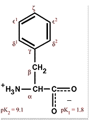

The Biology Project > Biochemistry > The Chemistry of Amino Acids
Phenylalanine F (Phe)
Chemical Properties:
Aromatic
(Aromatic R-group)Physical Properties:
Nonpolar
As the name suggests, phenylalanine, an essential amino acid, is a derivative of alanine with a phenyl substituent on the β carbon. Phenylalanine is quite hydrophobic and even the free amino acid is not very soluble in water.
It is an interesting point of history that Marshall Nirenberg and Phil Leder in their earliest experiments were studying the translation of the synthetic message polyU, which encodes polyphenylalanine. It was a happy coincidence that the product was insoluble. At the time, they did not know that UUU encodes Phe, but soon after the precipitate formed in their translation mix, they did, and they were on the way to unraveling the genetic code, and the Nobel prize.
Due to its hydrophobicity, phenylalanine is nearly always found buried within a protein. The π electrons of the phenyl ring can stack with other aromatic systems and often do within folded proteins, adding to the stability of the structure.

The Biology Project > Biochemistry > The Chemistry of Amino Acids
http://biology.arizona.edu
All contents copyright © 2003. All rights reserved.